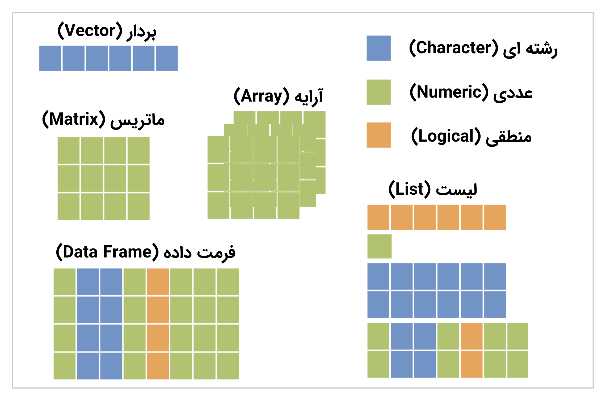

فصل 6 ساختار داده

شکل 6.1: ساختار داده در R
برای مدیریت دادهها در زبان برنامه نویسی R، ساختار دادههای مختلفی را در نظر گرفتهاند. مانند:
- بردار (Vector)
[1] "1" "2" "Mohsen" NA "56"[1] 1 2 3 4- تولید یک بردار که مقادیر آن ترتیب خاصی دارند
[1] "se" "ye" "se" "do"- مرتب کردن برحسب حروف الفبا
[1] "do" "se" "se" "yek"- فاکتور (factor)
[1] se yek se do
Levels: yek do se- مرتب کردن بر حسب سطح بندی
[1] yek do se se
Levels: yek do se- ماتریس (Matrix)
[,1] [,2]
[1,] 1 3
[2,] 2 4- آرایه (Array)
, , 1
[,1] [,2]
[1,] 1 3
[2,] 2 4
, , 2
[,1] [,2]
[1,] 5 7
[2,] 6 8- قالب داده (Data Frame)
name age male
1 ali 27 TRUE
2 sara 20 FALSE
3 reza 30 TRUE- لیست (List)
Code
$vec
[1] 1 2 3 4
$mat
[,1] [,2]
[1,] 1 3
[2,] 2 4
$ary
, , 1
[,1] [,2]
[1,] 1 3
[2,] 2 4
, , 2
[,1] [,2]
[1,] 5 7
[2,] 6 8
$df
name age
1 ali 27
2 sara 20
3 reza 30